To recover a radiance map for the arch image, we need to first solve for g (one for each channel). The equations below are used. I set up a system of equations and then used np.linalg.lstsq to solve for g and natural log of E.
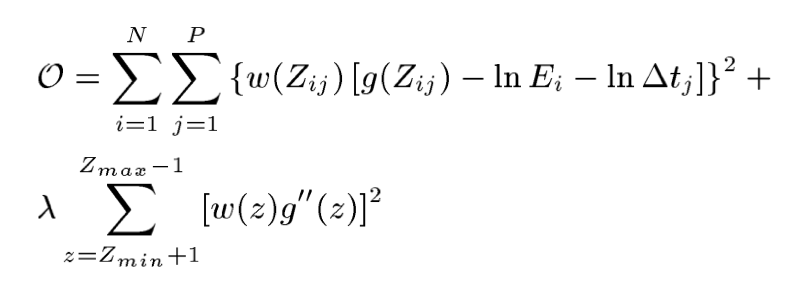Here are the generated graphs of g with the second-derivative smoothing term and tent function weighting:
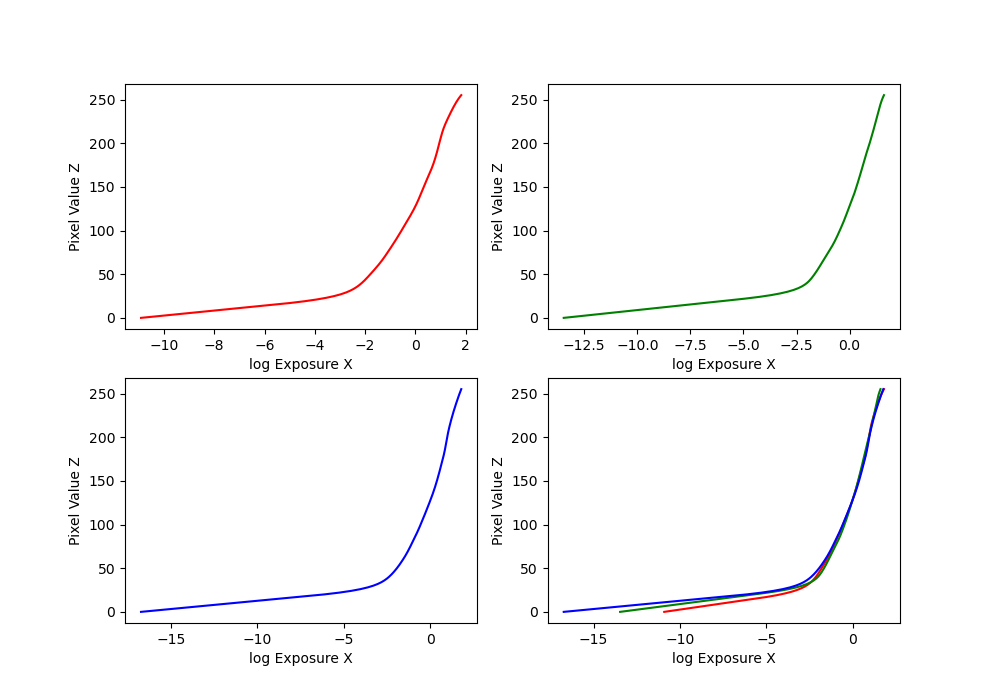Here are graphs of g without lambda, without weights, and without both of them:
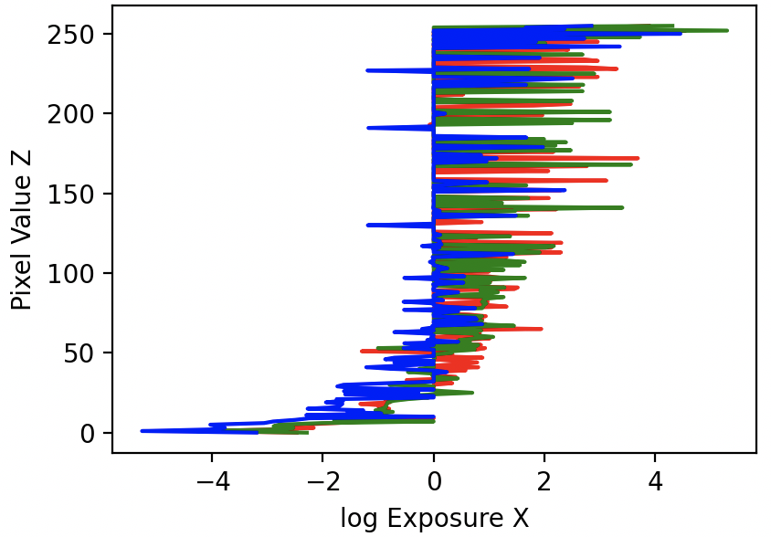 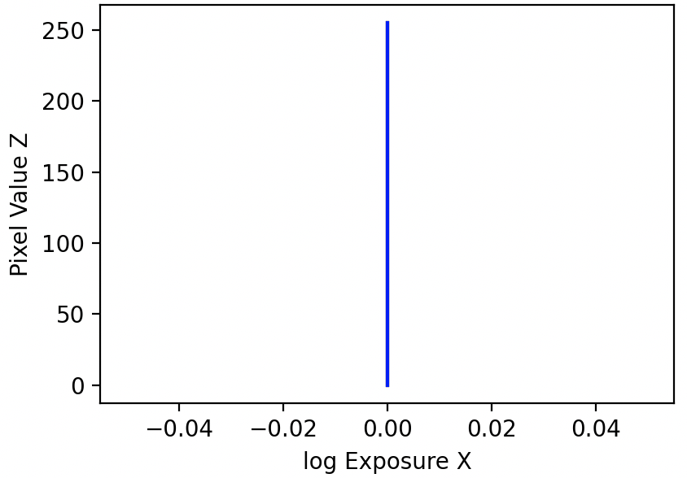
Once we have g, we can construct the high dynamic range radiance map using the formula below:
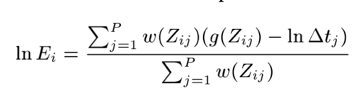Here's the radiance map of the arch image.
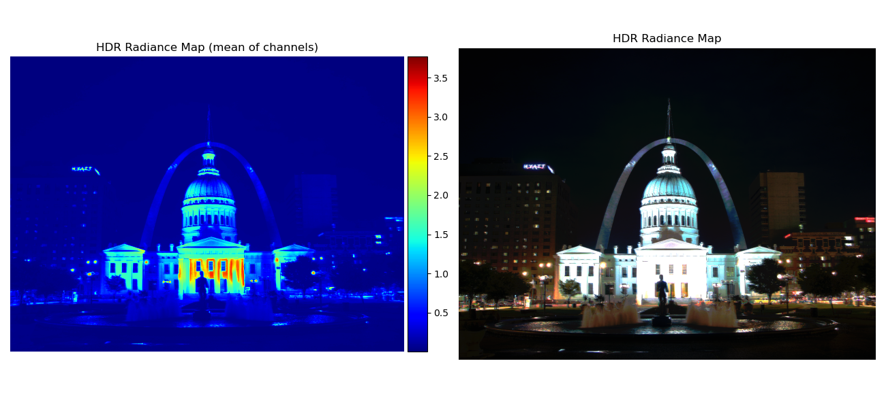A naive global tone map function in which exposure values are linearly scaled within the range of 0 to 1 is provided.
To implement the simple global tone mapping function, I used the equation: E_display = E_world / (1 + E_world)
To implement a local method, I followed the steps in the spec.
Here are the images provided. The Durand local method has a better performance while the simple global method often shows a really bright image.
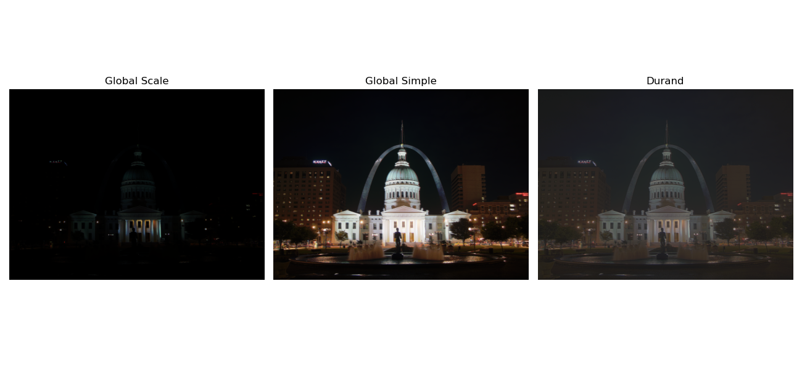 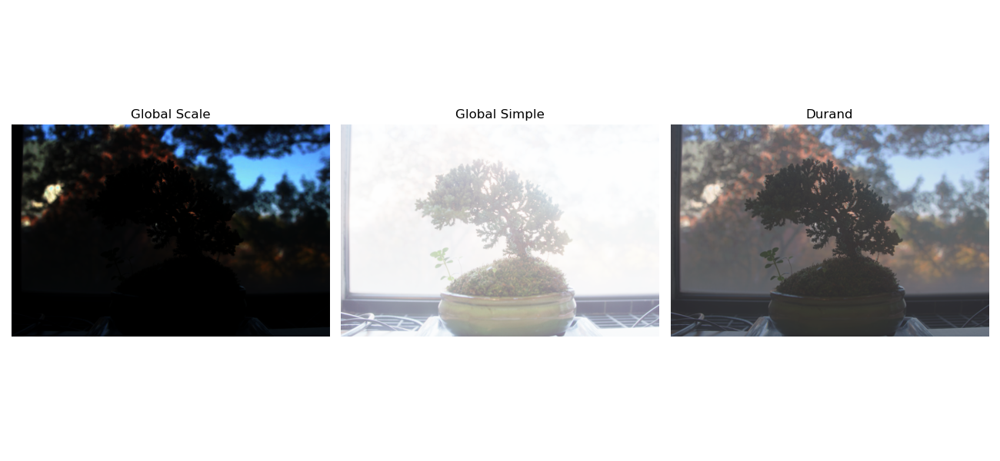 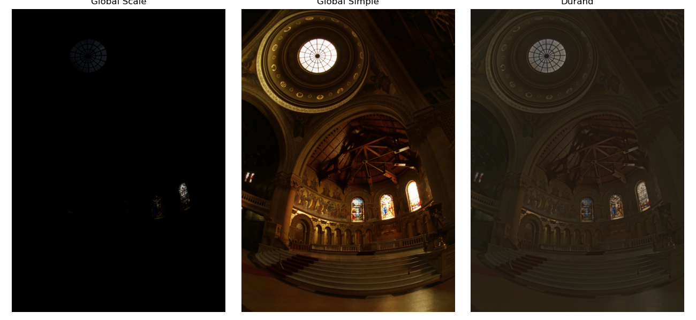 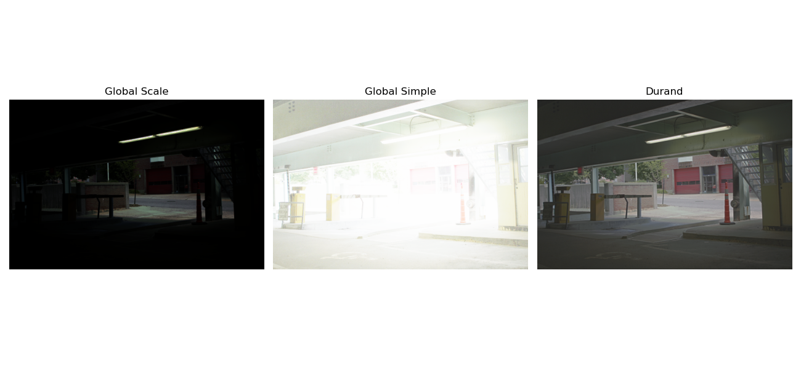 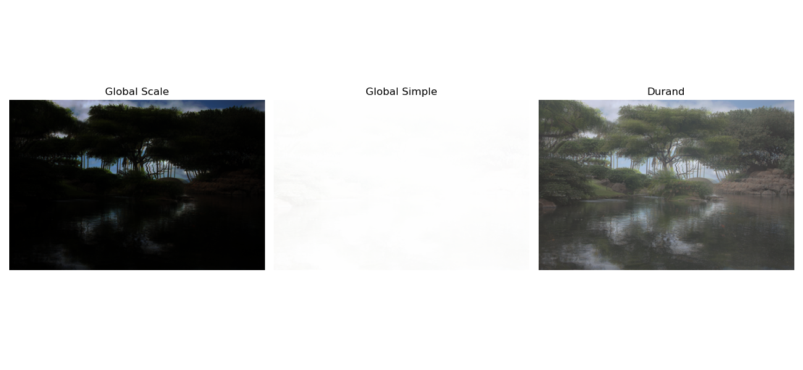 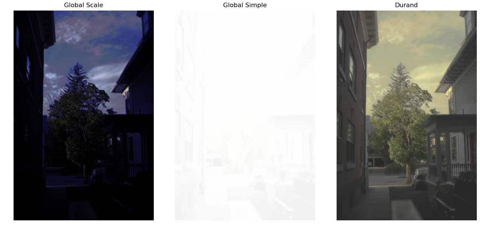 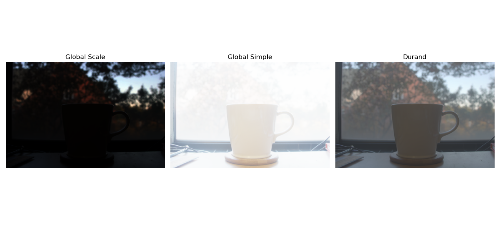 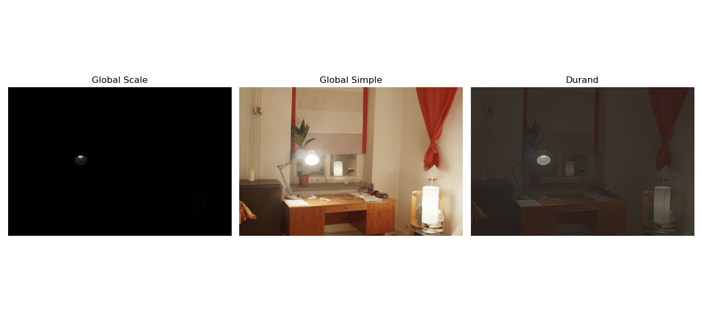I chose the arch image and applied high-pass filter to sharpen the details in the image as the durand image was a little blurry.
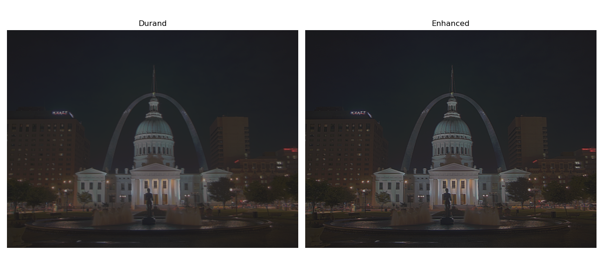The garden images are not well-aligned, so I used the technique in project 1 to align the images. Then, I produced the following results.
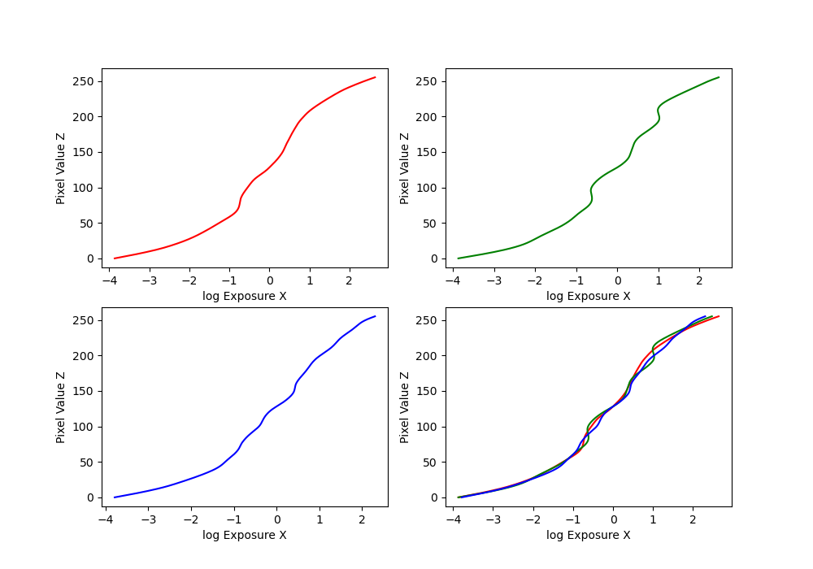 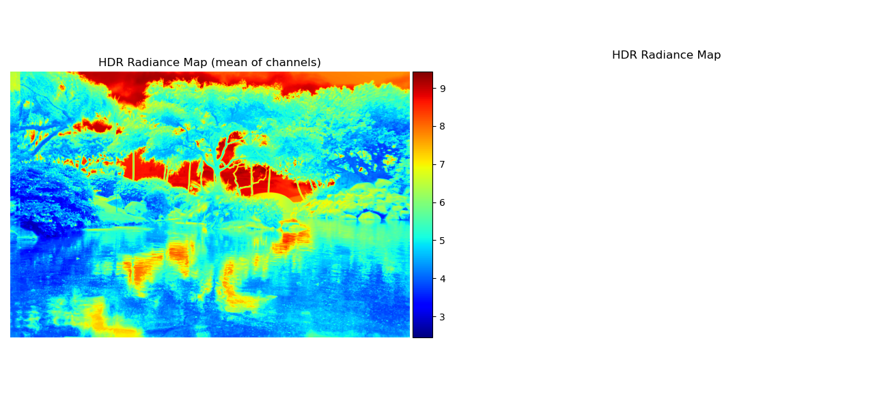 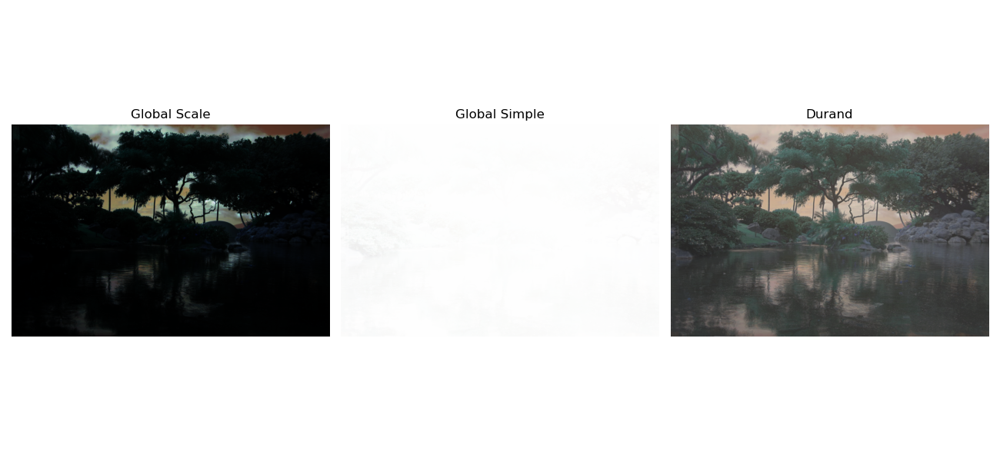Below is a comparison between not-aligned and aligned. The aligned images clearly produce a better result.
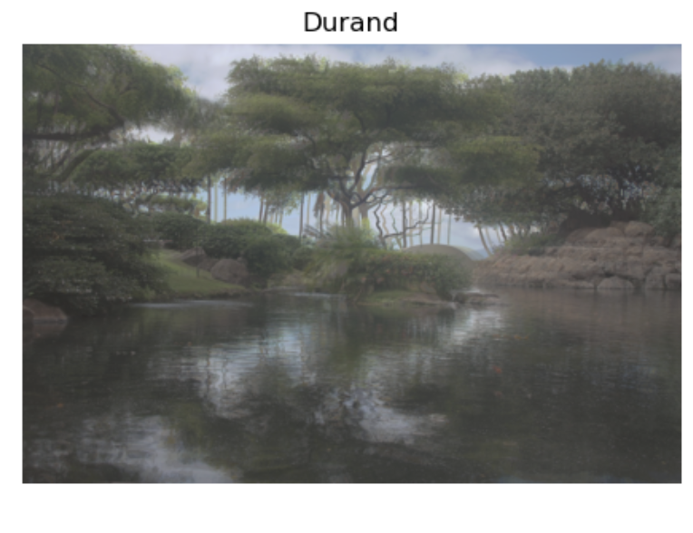 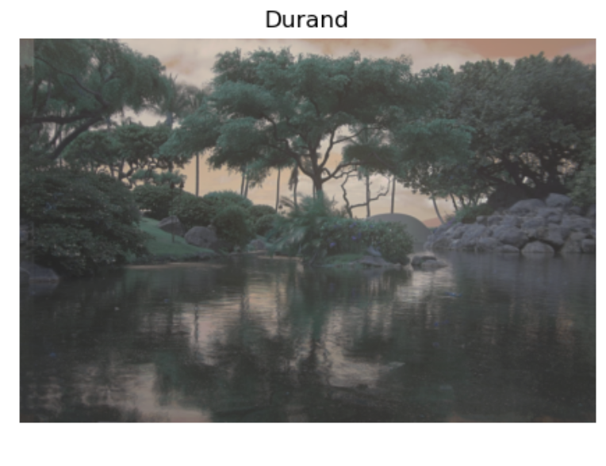